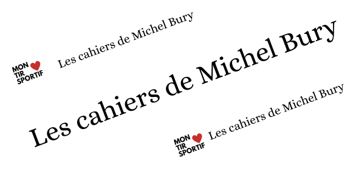

Michel Bury

Ingénieur et cadre technique de la FFTir, Michel Bury partage ses analyses, ses traductions et ses archives : la balistique, le SCATT, le lâcher entre les battements du cœur, l’histoire du tir et la préparation des compétitions, la nutrition et la démarche qualité au club.
Michel Bury, ingénieur-entraîneur
Ingénieur de formation, Michel Bury a été cadre technique d’État de la FFTir à partir de 1985, puis cadre technique national : transmission des connaissances, formation des entraîneurs, conseil, collaboration avec l’ISSF, échanges internationaux, jury et coaching.
Il se définit lui-même comme un « ingénieur-entraîneur » : ses études lui ont permis d’appliquer les mathématiques et la physique à l’entraînement, et surtout de les vulgariser. Pratiquant l’allemand et l’anglais, il a construit un vaste réseau international de tireurs, d’entraîneurs et de dirigeants, et a toujours fait profiter ses tireurs et ses entraîneurs de ce qu’il apprenait.
En bref
- École d’ingénieur (ENI Belfort, aujourd’hui UTBM)
- BEES 1er et 2e degrés
- Licence A d’entraîneur ISSF (1996)
- Cadre technique de la FFTir depuis 1985
- A utilisé le SCATT avec les jeunes du CREPS de Strasbourg, où il a aussi enseigné l’anatomie
Balistique, technique et SCATT
Les fichiers à télécharger (Word, Excel)
Pour aller plus loin sur le cœur et la stabilité : la stabilité et lire ses erreurs avec un SCATT, sur le site Pistolet ↗.
Tester et choisir ses munitions
Comment l’équipe de France sélectionnait ses lots de cartouches : la méthode de test, puis l’organisation des achats.
S’entraîner et préparer une compétition
Deux articles sur la structuration de l’entraînement, puis cinq fiches courtes pour s’entraîner avec méthode et aborder un match dans les meilleures conditions.
Condition physique et nutrition
Se préparer physiquement, puis bien s’alimenter : la diététique adaptée au tir et le fer.
Ces fiches donnent des repères généraux : elles ne remplacent pas l’avis d’un médecin ou d’un diététicien, surtout avant de prendre un complément alimentaire.
Histoire du tir
Des articles d’époque, conservés dans « les cahiers de Michel Bury ».
Ses articles parus
La liste tenue par Michel Bury de ses articles publiés, surtout dans les Cahiers du Pistolier et du Carabinier. Un clic sur un titre ouvre l’article quand nous l’avons.
| Année | Titre | Sujet | Paru dans |
|---|---|---|---|
| 1989 | Tir dans le vent et avec mirage (1re partie) | Vent et mirage, exercices | Cahiers n° 127 |
| 1989 | Tir dans le vent et avec mirage (2e partie) | Vent, mirages, exercices | Cahiers n° 131 |
| 1991 | Classements nationaux | Pourquoi, comment ? | Cahiers n° 143 |
| 1993 | Comment pallier le contre-jour (1re partie) | Définitions et moyens | Cahiers n° 155 |
| 1993 | Mille et une raisons pour se préparer physiquement | Exercices et justifications | Cahiers n° 156 et UIT Journal |
| 1994 | Diététique appliquée au tir | Conseils pratiques | Cahiers n° 161 |
| 1996 | Comment pallier le contre-jour (2e partie) | Moyens techniques | Cahiers n° 173 |
| 1997 | Structuration de l’entraînement (1re partie) | Entraînement, chronologie | Cahiers n° 180 |
| 1997 | Structuration de l’entraînement (2e partie) | Illustrations | Cahiers n° 182 |
| 2000 | Plan d’entraînement 10 et 50 m | CREPS de Strasbourg | — |
| 2003 | Comment se testent les cartouches 22 LR ? | Tests de munitions | Le Tir Info n° 59 |
Sa liste cite aussi, sans date : Les 3 positions (1993), une check-list pour compétition, de J-3 jusqu’à l’épreuve et le mental. La liste d’origine (Excel).
La démarche qualité au club
Un module de formation à distance (FOAD) en quatre parties et une évaluation, pour faire progresser un club de tir avec les outils de la démarche qualité : écouter, organiser, améliorer, contrôler.